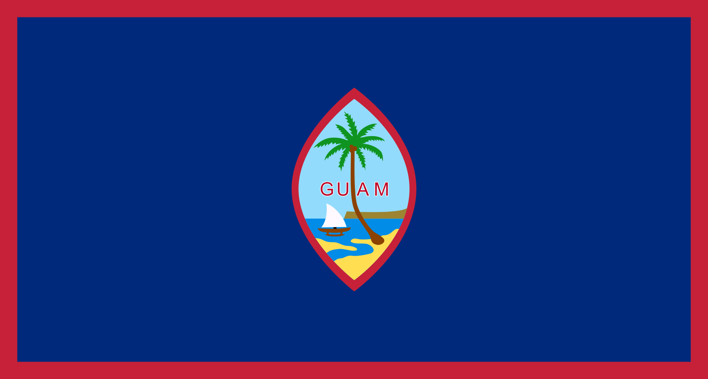
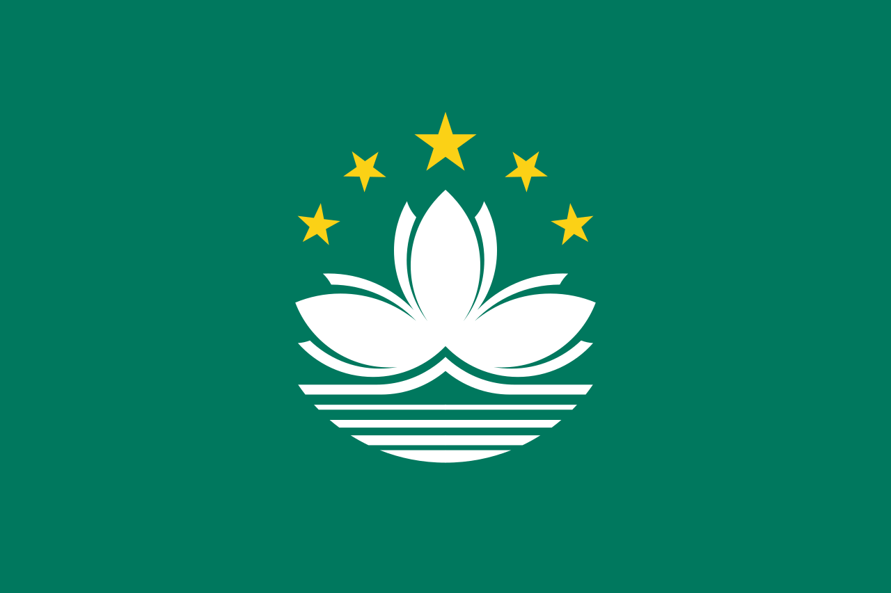
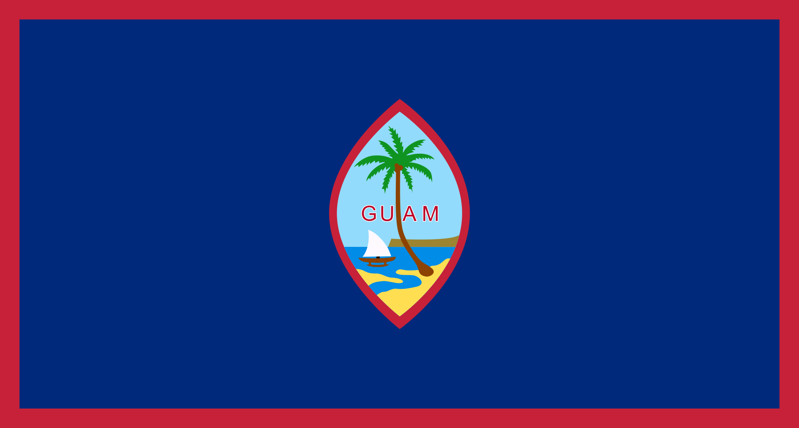
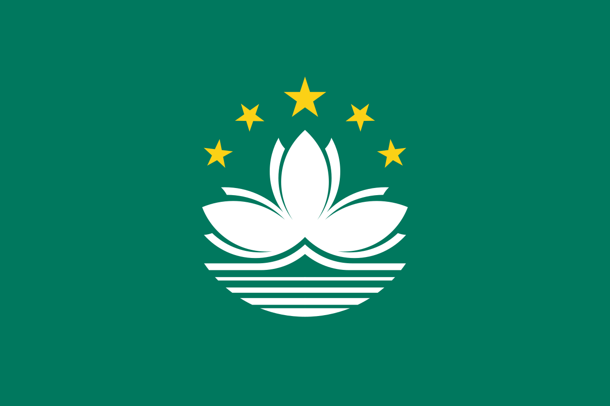

문화와 관광지
문화는 그 나라의 얼굴이라고 해도 과언이 아닙니다. 문화와 관광지에 대해 둘러보세요.
| 아시아 | 동남아시아 | 유럽 | 기타 |
|---|---|---|---|
| 대한민국 |  베트남 베트남 |  이탈리아 이탈리아 |  미국 미국 |
 일본 일본 |  말레이시아 말레이시아 | 독일 | 러시아 |
 중국 중국 |  싱가포르 싱가포르 |  스페인 스페인 | 아랍에미리트 |
 대만 대만 | 태국 | 캐나다 | 미국령 괌 |
| 마카오 | 필리핀 |  프랑스 프랑스 | |
| 홍콩 | 영국 | ||
 터키 터키 |

| 아시아 | 동남아시아 | 유럽 | 기타 |
|---|---|---|---|
| 대한민국 | 베트남 | 이탈리아 | 미국 |
| 일본 | 말레이시아 | 독일 | 러시아 |
| 중국 | 싱가포르 | 스페인 | 아랍에미리트 |
| 대만 | 태국 | 캐나다 | 미국령 괌 |
| 마카오 | 필리핀 | 프랑스 | |
| 홍콩 | 영국 | ||
| 터키 |